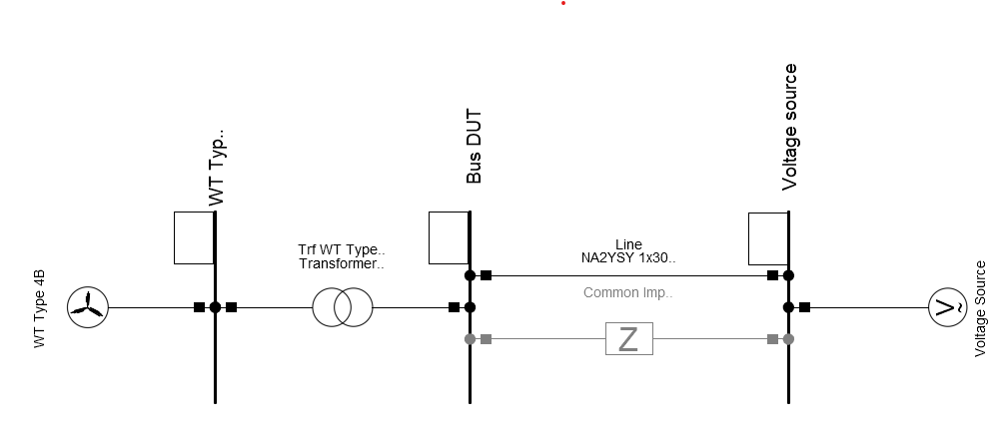
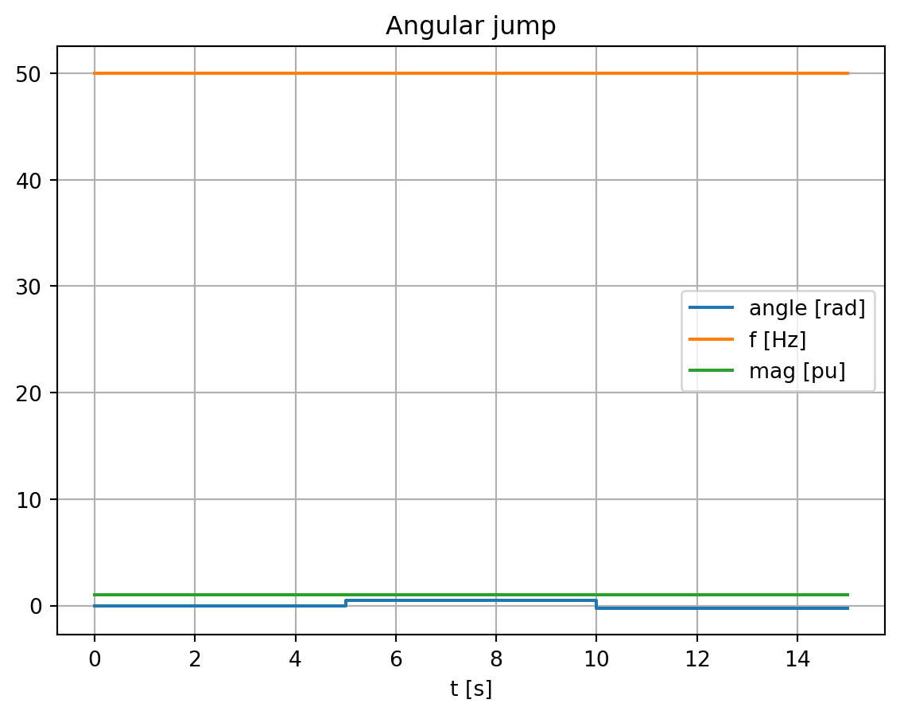
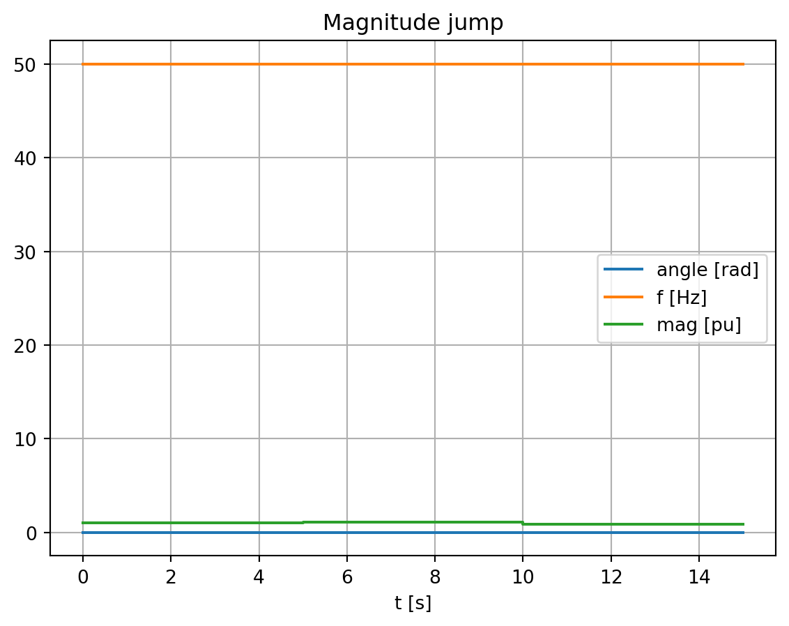
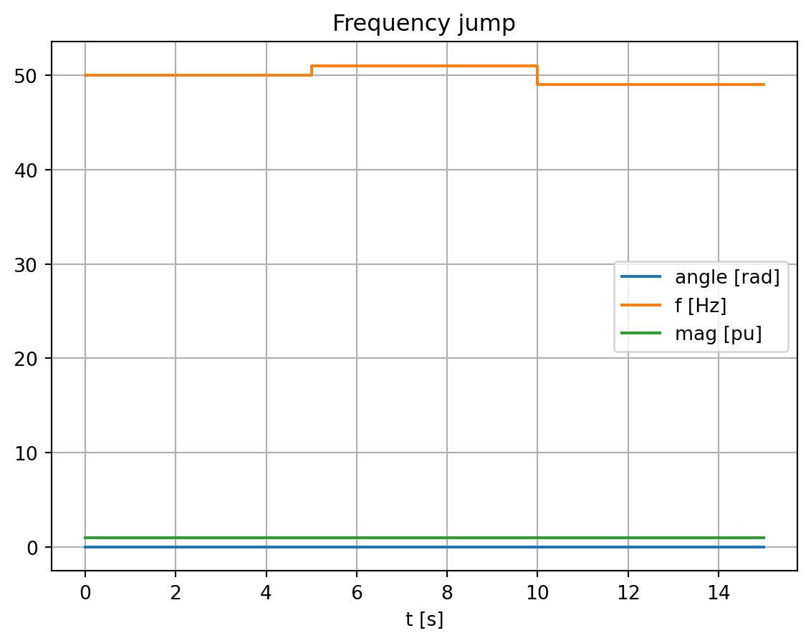

# If you use IPython/Jupyter:
import sys
import json
with open(r"..\..\settings_local.json") as settings_file:
SETTINGS = json.load(settings_file)
sys.path.append(
SETTINGS["local path to PowerFactory application"] # e.g. r"C:\Program Files\DIgSILENT\PowerFactory 2025 SP5\Python\3.13"
)
# Get the PF app
import powerfactory
app = powerfactory.GetApplication()
app.Show()Dynamic Model Validation and Requirements Testing
This tutorial illustartes the dynamic simulation of a unit model (e.g. a wind turbine) for test scenarios with varying grid voltage behaviour at the point of connection. Such tests are required for example if you want to
- debug a dynamic model and its controllers
- validate a dynamic model
- from another software to PowerFactory: validate a model based on a reference (e.g. the same model implemented in a different software)
- from PowerFactory to another software: create simulation results to validate the model implementation in another software
- test the behaviour of a dynmic model for requirements, e.g. grid code requirements (comming soon!)
Arguably one of the most useful features in this tutorial is the CompositeModel interface of powfacpy which allows to monitor, plot and finally export all signals (input, output, internal, etc.) of dynamic models from a simulation.
1 Test System
The test system depicted in Figure 1 is used. It is a simple single-machine-infinite-bus system. The device under test (DUT), a type 4B wind turbine, is connected through a transformer to a \(20\) kV cable with a controllable voltage source at the other end. You can also set the impedances into service as an alternative to the transformer (you then have to adapt the nominal voltages) and cable to simplify the system. Feel free to connect a different DUT and adapt the DUT_COMPOSITE_MODEL_PATH below.
You find the component_test.pfd project in the .\pf_models folder. Please add it to your powfacpy folder in the PowerFactory database. The next cell activates the project

DUT_COMPOSITE_MODEL_PATH = r"Network Model\Network Data\Grid\WECC WT Control System Type 4B"
app.ActivateProject(rf"{SETTINGS["path to powfacpy folder in PowerFactory database"]}\component_tests")02 Voltage Source Time Series
The voltage source angle, magnitude and frequency is controlled to test the response of the DUT. The next cell defines the time series of these signals. The trimes package is later used to create pandas DataFrames based on these definitions and these are read into the DSL objects controlling the voltage source.
voltage_source_signals = {
"Angular jump": {
"t [s]": [0, 5, 10, 15],
"angle [rad]": [0, 0.5, -0.25, -0.25],
"f [Hz]": [50],
"mag [pu]": [1],
},
"Magnitude jump": {
"t [s]": [0, 5, 10, 15],
"angle [rad]": [0],
"f [Hz]": [50],
"mag [pu]": [1, 1.1, 0.9, 0.9],
},
"Frequency jump": {
"t [s]": [0, 5, 10, 15],
"angle [rad]": [0],
"f [Hz]": [50, 51, 49, 49],
"mag [pu]": [1],
},
}The next cell uses trimes functions to create and visualize DataFrames of time series data of the voltage source signals. Discrete steps of the signals are implemented as value changes between small time steps, e.g. between \((5-1E-6)\)s and \(5\)s.
import matplotlib.pyplot as plt
from trimes.signal_generation import discretize, create_ts_from_dict_with_varying_length
dataframes_for_scenarios = {}
for scenario, voltage_settings in voltage_source_signals.items():
df = create_ts_from_dict_with_varying_length(voltage_settings, time_label="t [s]")
df = discretize(df)
dataframes_for_scenarios[scenario] = df
# Display
print(scenario)
display(df)
df.plot()
plt.title(scenario)Angular jump| angle [rad] | f [Hz] | mag [pu] | |
|---|---|---|---|
| t [s] | |||
| 0.000000 | 0.00 | 50.0 | 1.0 |
| 4.999999 | 0.00 | 50.0 | 1.0 |
| 5.000000 | 0.50 | 50.0 | 1.0 |
| 9.999999 | 0.50 | 50.0 | 1.0 |
| 10.000000 | -0.25 | 50.0 | 1.0 |
| 14.999999 | -0.25 | 50.0 | 1.0 |
| 15.000000 | -0.25 | 50.0 | 1.0 |
Magnitude jump| angle [rad] | f [Hz] | mag [pu] | |
|---|---|---|---|
| t [s] | |||
| 0.000000 | 0.0 | 50.0 | 1.0 |
| 4.999999 | 0.0 | 50.0 | 1.0 |
| 5.000000 | 0.0 | 50.0 | 1.1 |
| 9.999999 | 0.0 | 50.0 | 1.1 |
| 10.000000 | 0.0 | 50.0 | 0.9 |
| 14.999999 | 0.0 | 50.0 | 0.9 |
| 15.000000 | 0.0 | 50.0 | 0.9 |
Frequency jump| angle [rad] | f [Hz] | mag [pu] | |
|---|---|---|---|
| t [s] | |||
| 0.000000 | 0 | 50 | 1 |
| 4.999999 | 0 | 50 | 1 |
| 5.000000 | 0 | 51 | 1 |
| 9.999999 | 0 | 51 | 1 |
| 10.000000 | 0 | 49 | 1 |
| 14.999999 | 0 | 49 | 1 |
| 15.000000 | 0 | 49 | 1 |



This format is compliant with the lapprox function of DSL which is used in the voltage source controllers. The block defintion (BlkDef) uses the following code:
ref = lapprox(time(),array_linapprox)The array_linapprox then appears in the dialogue of the DSL model:

We will see how to access and set these arrays later.
The next cell saves the voltage signal data to .csv and .json files if required. This can be helpful for example if you want to use the data in another simulation platform and implement the same tests.
import os
import shutil
model_validation_dir = r".\output\dynamic_model_validation"
if os.path.exists(model_validation_dir):
shutil.rmtree(model_validation_dir)
os.makedirs(model_validation_dir)
for scenario, df in dataframes_for_scenarios.items():
scenario_folder = model_validation_dir + "\\" + scenario
os.makedirs(scenario_folder)
df.to_csv(scenario_folder + "\\" + "voltage_source.csv")
with open(scenario_folder + "\\" +"voltage_source.json", "w") as outfile:
json.dump(voltage_settings, outfile, indent=4, sort_keys=False)3 Create Study Cases
Next we create study case for the tests. First, we set up a base case which contains plots and where the result signals of the DUT, including all itscontrollers, are monitored.
Let’s clean the study case:
from powfacpy.base.active_project import ActiveProjectCached
from powfacpy.applications.plots import Plots
try:
app.Hide()
act_prj = ActiveProjectCached(app)
act_prj.activate_study_case(r"Study Cases\Base Case")
pfplt = Plots(cached=True)
pfplt.clear_all_graphics_pages()
act_prj.clear_results_variables()
finally:
app.Show()C:\Users\seberlein\local\FraunhIEE-UniKassel-PowSysStability\powfacpy\src\powfacpy\base\active_project.py:238: UserWarning: The returned *.ElmRes object is not unique in the study case: 'Study Cases\Base Case'. Make sure that the correct *.ElmRes object is used: <l3>\seberlein.IntUser\powfacpy\component_tests.IntPrj\Study Cases.IntPrjfolder\Base Case.IntCase\All calculations.ElmRes</l3>.
warn(We want to display the grafic of the grafic of the test system network.
from powfacpy.pf_classes.elm.net import Network
try:
app.Hide()
grid = Network(act_prj.get_unique_obj(r"Network Model\Network Data\Grid"))
grid.show_grafic()
finally:
app.Show()The powfacpy interface to the composite model class (ElmComp) provides convenient methods to monitor the signals of all slots (DSL models, static generators, etc.) and optionally create plots in PowerFactory for each slot.
The method monitor_signals_of_slots adds result variables for all input and output signals. The method monitor_signals_of_dsl_models adds also internal variable and states of DSL models.
from powfacpy.pf_classes.elm.comp import CompositeModel
try:
app.Hide()
comp = CompositeModel(act_prj.get_unique_obj(DUT_COMPOSITE_MODEL_PATH))
comp.monitor_signals_of_slots(create_plots=True)
comp.monitor_signals_of_dsl_models(create_plots=True)
finally:
app.Show()Have a look at the pages shown in the study case to validate that the plots were created.
Let’s do the same for the controlled voltage source:
try:
app.Hide()
comp = CompositeModel(act_prj.get_unique_obj(r"Network Model\Network Data\Grid\Voltage source ctrl"))
comp.monitor_signals_of_slots(create_plots=True)
finally:
app.Show()The base study case is now ready. We use powfacpy’s StudyCases interface to create study cases for each scenario (angle, frequency and magnitude jumps) and use the Base Case as a template:
from powfacpy.applications.study_cases import StudyCases
try:
app.Hide()
pfsc = StudyCases(app)
pfsc.base_study_case = r"Study Cases\Base Case"
pfsc.parameter_values = {
"Scenario": list(dataframes_for_scenarios.keys())
}
pfsc.parameter_paths = {}
pfsc.set_parent_folders_for_cases_scenarios_variations("Model validation")
pfsc.add_scenario_to_each_case = False
pfsc.add_variation_to_each_case = True
pfsc.create_cases()
finally:
app.Show()4 Dynamic Simulations
To run the dynamic simualtions, we need to set the arrays in the voltage source controllers. Let’s assign the DSL models. The DynamicSimulation interface of powfacpy allows to access and set the DSL arrays.
from powfacpy.applications.dynamic_simulation import DynamicSimulation
pfds = DynamicSimulation(app)
dsl_voltage_source_angle = act_prj.get_unique_obj(r"Network Model\Network Data\Grid\Voltage source ctrl\Angle")
dsl_voltage_source_magnitude = act_prj.get_unique_obj(r"Network Model\Network Data\Grid\Voltage source ctrl\Magnitude")
dsl_voltage_source_frequency = act_prj.get_unique_obj(r"Network Model\Network Data\Grid\Voltage source ctrl\Frequency")
pfds.get_dsl_obj_array(dsl_voltage_source_angle, size_included_in_array=False)[[0.0, 0.0],
[4.999999, 0.0],
[5.0, 0.0],
[9.999999, 0.0],
[10.0, 0.0],
[14.999999, 0.0],
[15.0, 0.0]]We iterate the study cases set the DSL arrays according to the pandas time series:
try:
app.Hide()
for case_num, case_obj in enumerate(pfsc.study_cases):
case_obj.Activate()
scenario_name = pfsc.get_value_of_parameter_for_case("Scenario", case_num)
df_vs = dataframes_for_scenarios[scenario_name]
pfds.set_dsl_obj_array_from_pandas_series(dsl_voltage_source_angle, df_vs["angle [rad]"])
pfds.set_dsl_obj_array_from_pandas_series(dsl_voltage_source_magnitude, df_vs["mag [pu]"])
pfds.set_dsl_obj_array_from_pandas_series(dsl_voltage_source_frequency, df_vs["f [Hz]"])
finally:
app.Show()Now we are ready to simulate! Results are saved to a .csv file.
from powfacpy.applications.results import Results
try:
app.Hide()
pfri = Results(app)
for case_num, case_obj in enumerate(pfsc.study_cases):
case_obj.Activate()
scenario_name = pfsc.get_value_of_parameter_for_case("Scenario", case_num)
pfds.initialize_and_run_sim()
df = pfri.export_to_pandas()
df.to_csv(model_validation_dir + "\\" + scenario_name + "\\simulation_results.csv")
finally:
app.Show()C:\Users\seberlein\local\FraunhIEE-UniKassel-PowSysStability\powfacpy\src\powfacpy\base\active_project.py:238: UserWarning: The returned *.ElmRes object is not unique in the study case: 'Study Cases\Model validation\Scenario _ Angular jump'. Make sure that the correct *.ElmRes object is used: <l3>\seberlein.IntUser\powfacpy\component_tests.IntPrj\Study Cases.IntPrjfolder\Model validation\Scenario _ Angular jump.IntCase\All calculations.ElmRes</l3>.
warn(
C:\Users\seberlein\local\FraunhIEE-UniKassel-PowSysStability\powfacpy\src\powfacpy\base\active_project.py:238: UserWarning: The returned *.ElmRes object is not unique in the study case: 'Study Cases\Model validation\Scenario _ Magnitude jump'. Make sure that the correct *.ElmRes object is used: <l3>\seberlein.IntUser\powfacpy\component_tests.IntPrj\Study Cases.IntPrjfolder\Model validation\Scenario _ Magnitude jump.IntCase\All calculations.ElmRes</l3>.
warn(
C:\Users\seberlein\local\FraunhIEE-UniKassel-PowSysStability\powfacpy\src\powfacpy\base\active_project.py:238: UserWarning: The returned *.ElmRes object is not unique in the study case: 'Study Cases\Model validation\Scenario _ Frequency jump'. Make sure that the correct *.ElmRes object is used: <l3>\seberlein.IntUser\powfacpy\component_tests.IntPrj\Study Cases.IntPrjfolder\Model validation\Scenario _ Frequency jump.IntCase\All calculations.ElmRes</l3>.
warn(5 Requirements Testing
This section focuses on testing the DUT behaviour for time series requirements, e.g. according to grid code requirements. Take for example the reactive power requirements based on the voltage magnitude at the point of coupling. The DUT has to adapt its reactive power to voltage changes in a certain time frame and with a certain tolerance.
We create an envelope for the feasible reactive power based on the voltage source signals.
Comming soon!